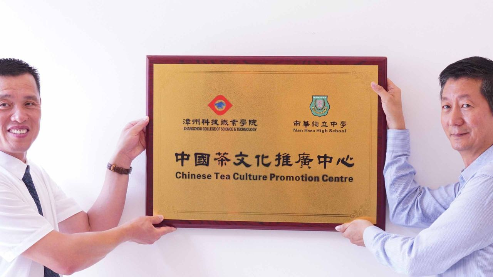
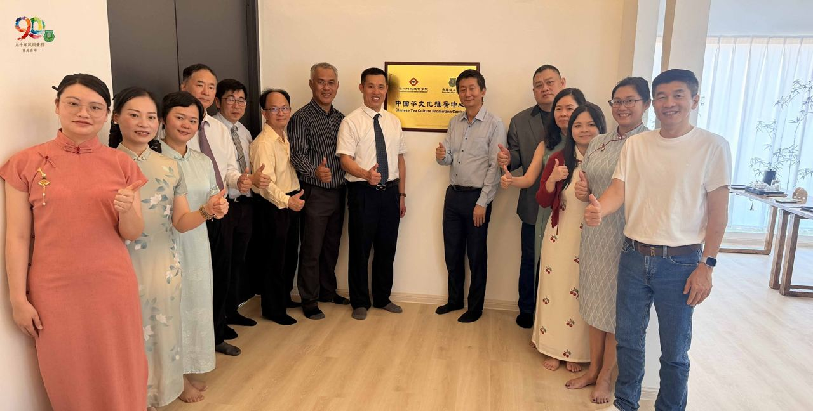
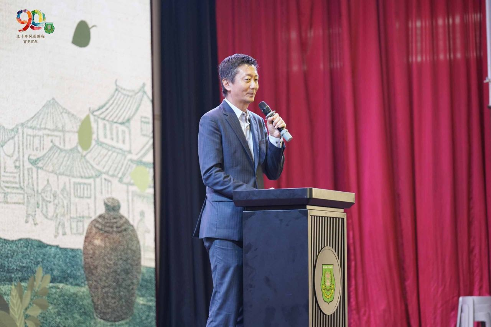
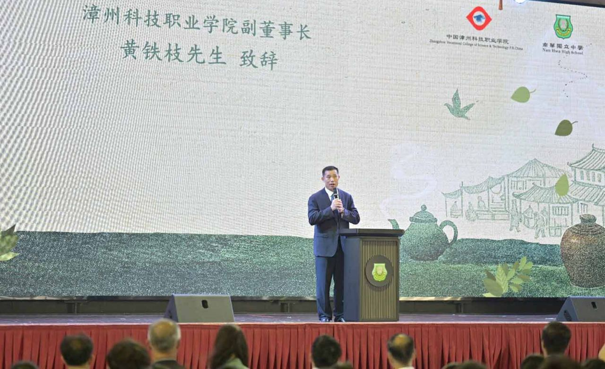
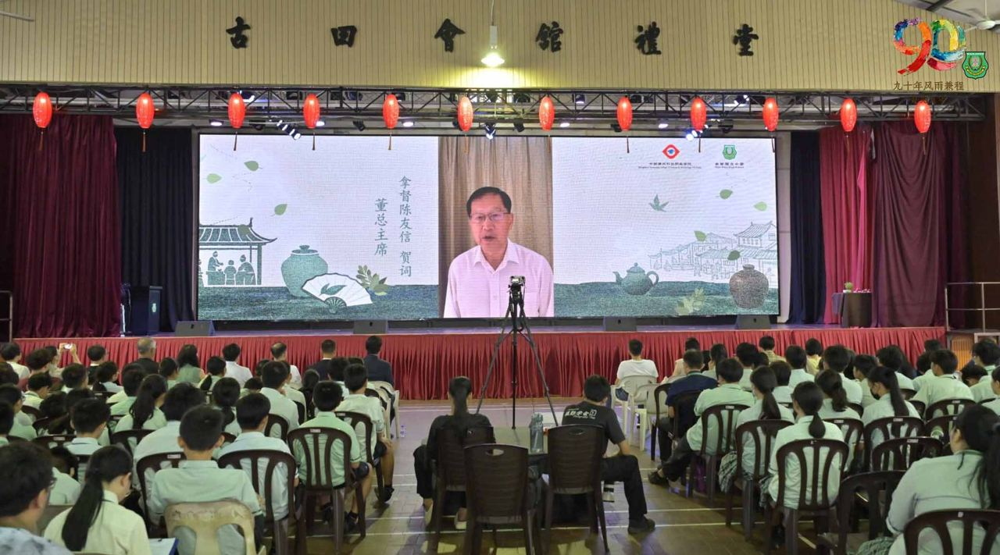
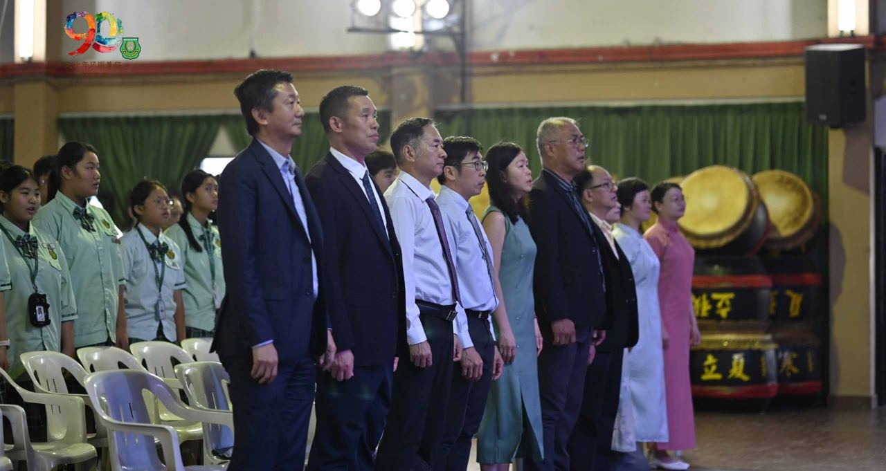
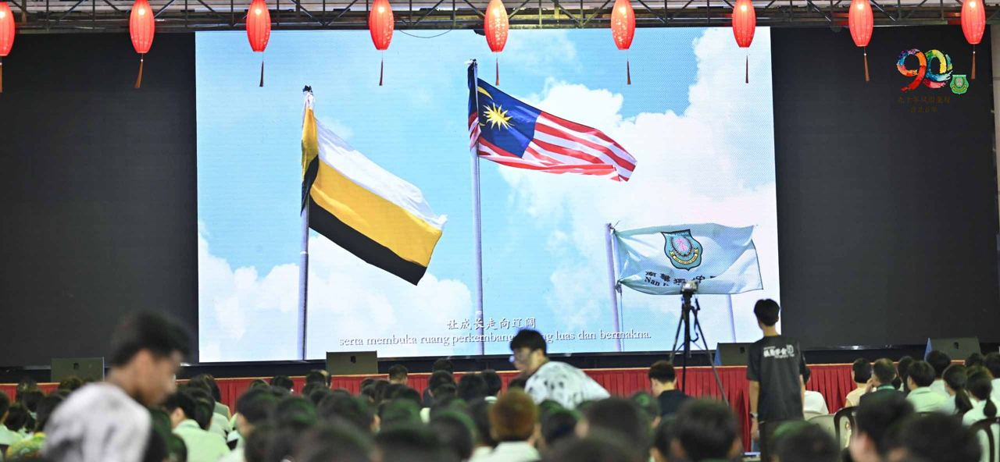

漳科院跨洋访南华独中
漳科院跨洋访南华独中
携手共建中国茶文化推广中心
茶，是中华文明古老的文化符码之一。
一叶一世界，一盏一道场。当这片叶子从福建漳州渡海而来，落根于曼绒南华独中的校园，它带来的不只是茶香，更是一座历经一年酝酿、跨越海峡的教育承诺终于兑现。
漳州科技职业学院与曼绒南华独中于日前在南华独中礼堂暨中国茶文化推广中心举行揭牌及开班仪式，正式宣告两校深度合作踏入实质落地阶段。这一刻，距离2025年12月陈丽冰校长亲赴漳州签下合作备忘录，恰好相隔四个月。彼时签下的是一张蓝图，今日揭开的是实景。
从漳州到曼绒的教育引种之旅
事实上，此次合作早有伏笔。2025年12月，陈丽冰博士亲赴中国福建漳州，实地走访漳州科技职业学院，参观天福文化产业园与天福茶博物院，并于当地与校长李奠础教授共同签署合作备忘录。背靠世界知名天福集团的漳州科技职业学院，素以"茶学合一"的办学模式著称，其在茶学领域深厚的师资与课程体系，正是南华独中此次引进的核心。李奠础教授当时表示，南华独中是该校海外的首个国际合作伙伴，双方将携手推动中国茶文化在"一带一路"沿线国家的传播。今日揭牌，是那一次握手之后最具分量的注脚。
典礼开场，龙狮团气势磅礴地迎宾入场，震天鼓声之中，为这一历史性时刻奠定了属于中华文化的仪式感。
一叶联结两岸的华教情缘
南华独中董事长颜登逸先生在致辞中指出，公众对中国的认识，实质上就是对中华文化的认证：“理解、谅解、认识，这就是增进友谊、消除误解的基础。 ” 他进一步说明，马来西亚60所华文独立中学就是为了让下一代“有根有魂 ” ，抵御同化压力、守护民族文化根系的坚垒之地。选修课程与考试成绩无关，但这里的茶艺课、机器人课，正是在帮学生发现自己的天赋与兴趣“为未来社会做好准备”。
漳州科技职业学院副董事长黄铁枝先生亦莅临致辞。他引用习近平总书记之语：“中马传统友谊跨越千年，两国友好在悠久历史中孕育，在文化交融中生长。 ” 他进一步强调，2022年“中国传统制茶技艺及其相关习俗 ” 列入联合国教科文组织人类非物质文化遗产代表名录，印证了茶的文明高度：“茶叶是和平使者，是人类文明的共同财富。 ”此外，黄副董事不忘恭贺南华独中即将迎来校庆庆典“南华独中创校九十载，深耕华文教育，是中马文化交融的重要窗口。”
马来西亚董总主席拿督陈友信先生虽身在国外，无法亲临现场，仍特录视频致辞表达支持。他指出，茶文化是中华文化历史悠久的组成部分，内涵丰富，在马来西亚同样深入人心；两校携手成立这个平台“有助于茶文化的推广更加顺畅，也对马中两国的文化交流有所帮忙 。” 他代表董总明确表态：“这类活动，是我们大力支持的。”
仪式上，两校代表共同完成揭牌仪式，并互赠纪念品；漳州科技职业学院亦向南华独中赠送茶学图书及教具，寓意学问的馈赠，亦是文化传承的托付。
旧宿舍·新文化馆
此次揭牌的中国茶文化推广中心，由南华独中旧校长宿舍翻新改建而成。这栋承载着几代教职员记忆的建筑，如今以另一种方式续写它与南华的情缘——不再是生活起居的居所，而是传承中华茶道精神的道场。
揭牌后，漳州科技职业学院师资团队随即在茶文化馆内展开茶艺展示，演示中国传统茶艺的冲泡程序与文化礼仪；宾主双方在茶香中品茗茶叙，深化合作情谊。
二十四节令鼓·祥龙醒狮呈瑞
典礼上，二十四节令鼓震响礼堂，祥龙呈瑞节目接续登台，而醒狮团表演中双狮展示对联 “茗传华夏脉，共育栋梁才”的当下将仪式推向高潮。这些植根于马来西亚华人土壤的文化表演，与来自中国大陆的茶艺展示在同一屋檐下相遇，恰是这场跨海合作最具象征意义的注脚“中华文化的多元流脉，在此汇聚一处。 ”
陈丽冰博士在受访时表示，这座茶文化推广中心能够落成，内心的感慨远不止于揭牌仪式本身：“一片茶叶能装下山河，一盏茶汤能温暖一个人。我们希望的，不只是学生能学会泡一壶好茶，而是茶的文化从这里出发，走进每一个居家。 ” 她期望，有一天，南华的学生能把茶的温度带进社区、带进千家万户。
午后，黄冠铭老师带领宾客游览怡保市区，以地方文化的温度为此行画下暖意收尾。从2025年12月漳州签约，到2026年4月24日曼绒揭牌，两校的合作不是突如其来的决定，而是陈校长所说的"教育引种"。在南洋的土地上，种下一棵从漳州移植而来的茶树。何时抽芽？何时茁壮？时间与耕耘者在不久终将如期交付指日可待的成绩单。
出席者包括有南华独中副董事长高级拿督叶绍利、董事总务何添胜、董事副总务林道祥、董事副总务拿督黄思贤、漳州科技职业学院国际交流中心主任陈奔教授、国际交流中心副主任洪雅婷女士、茶与食品科技学院副院长范春梅女士、茶与食品科技学院教师罗玉琴女士；中国茶文化推广中心主任暨茶艺课负责老师李淑桦老师。







